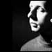
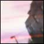
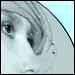

ARCHIVES 2002 |
|
An Interview with
Motomichi Nakamura
YOUNG HAE CHANG HEAVY INDUSTRIES
15 December 2002
|
|
Crowds and Power
Jody Zellen
15 December 2002
|
|  |
An Interview with Scanner
Rebekah Farrugia
1 November 2002
|
|  |
A loss is less and
death is not so easy
Kathryn Rantala
1 November 2002
|
|
Our Day with Jerry Springer
Davis Schneiderman
1 November 2002
|
|
An Interview, an Essay,
a New Media Project
Stephanie Strickland
Jaishree Odin
1 September 2002
|
|
Remembering my
Life In/Of Words
Richard Kostelanetz
1 October 2002
|
|  |
New Media Writing
William Gillespie
Mark C. Marino
1 September 2002
|
|
Jessica Irish
Inflat-o-scape
1 July 2002
|
|
Excerpts from Mark Amerika's Oz Blog
1 July 2002 |
|
Electronic Literature:
Ravi Shankar reports
N. Katherine Hayles speaks
1 July 2002
|
|
An Interview with
Shelley Jackson
by Rita Raley, with a
new story by Jackson
1 April 2002
|
|
William Poundstone
New Digital Emblems
with an interview by
Brian Kim Stefans
1 April 2002
|
|
Nicolas Clauss &
Jean-Jacques Birgé
Dervish Flowers
1 April 2002 |
|
YOUNG-HAE CHANG
HEAVY INDUSTRIES
ORIENT
1 February 2002 |
|
Ana Maria Uribe
Selected New Poems
1 February 2002
|
|
Giselle Beiguelman
Poetrica
1 September 2001 |
| |
Issues 1999-2001 edited by Brian Lennon
Issues 2002- edited by Thomas Swiss with Ingrid Ankerson |